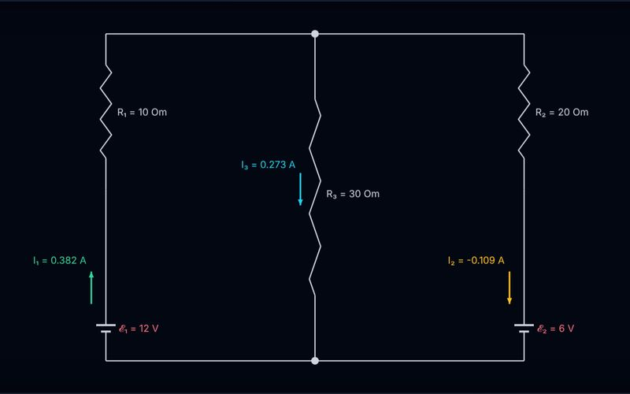
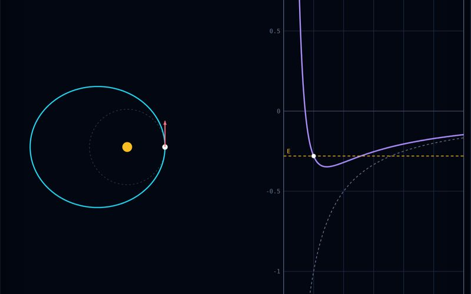
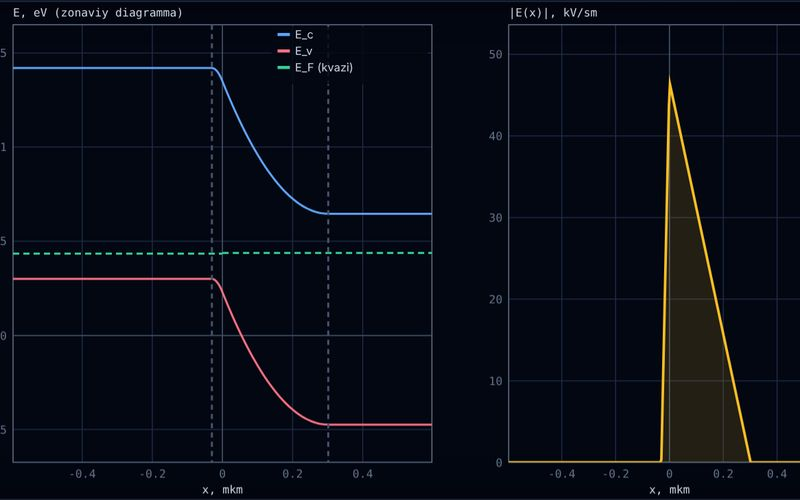
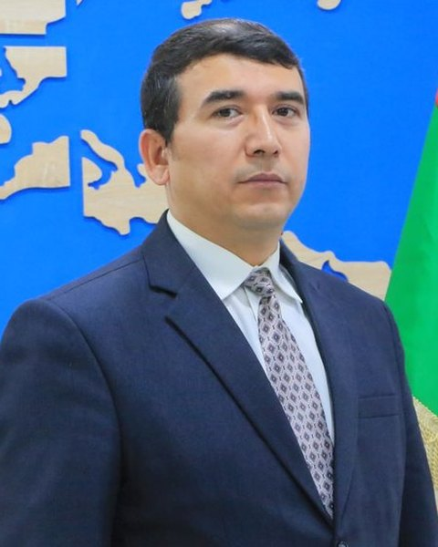

O‘zbekcha ovozli o‘qish
Matn va formulalar tabiiy neyron ovozda o‘qiladi — barcha kompyuter va telefonlarda bir xil.
Qo‘qon davlat universiteti · Fizika va astronomiya kafedrasi
To‘rtta fan bo‘yicha ochiq elektron darsliklar: ma’ruzalar, amaliy va laboratoriya mashg‘ulotlari, interaktiv modellar, nazorat testlari va o‘zbekcha ovozli o‘qish — bitta portalda.
Kirish
Darslik nomini yoki kartochkani bosing — darslik shu oynada ochiladi. Darslikdan chiqish uchun uning yuqori qismidagi “Portal” tugmasini bosing.
 01
01Kulon qonuni va Gauss teoremasidan o‘zgarmas tok, magnit maydon, elektromagnit induksiya, Maksvell tenglamalari va o‘zgaruvchan tokkacha.
60530700 — Astronomiya
Darslikni ochish
02Elektr, magnetizm va optika bo‘yicha laboratoriya ishlari: nazariya, o‘lchash tartibi, natijalar jadvali, xatoliklar hisobi va virtual laboratoriya.
60530500 — Fizika
Darslikni ochish
03Eng kichik ta’sir prinsipi, Lagranj va Gamilton formalizmi, markaziy maydon, tebranishlar, qattiq jism va relyativistik mexanika asoslari.
60530500 — Fizika
Darslikni ochish
04p-n o‘tish va Shottki kontaktidan bipolyar va maydon tranzistorlari, fotoelektrik asboblar va zamonaviy yarimo‘tkazgich texnologiyalarigacha.
70530504 — Yarimo‘tkazgichlar fizikasi
Darslikni ochishImkoniyatlar
Matn va formulalar tabiiy neyron ovozda o‘qiladi — barcha kompyuter va telefonlarda bir xil.
Brauzerda ishlaydigan simulyatorlar va ularni o‘zi boshqarib tushuntiradigan ovozli namoyish.
Har bir mavzu oxirida izohli testlar va ishlangan misollar; amaliy masalalar javoblari bilan.
Mazmun, soatlar, ta’lim natijalari va baholash rubrikalari tasdiqlangan fan dasturlari asosida.
O‘zbek, rus va ingliz tillari; qulay o‘qish rejimi, chop etish va telefonga moslashuv.
CC BY-SA 4.0 litsenziyasi; ro‘yxatdan o‘tish talab qilinmaydi. Rasmiy baholash — HEMIS tizimida.
Universitet
Universitet tarixi 1931-yil yanvarda Qo‘qon shahrida tashkil etilgan kechki pedagogika institutidan boshlanadi. 1943-yilda institutga ma’rifatparvar shoir Muqimiy nomi berilgan. Institut o‘nlab yillar davomida Farg‘ona vodiysi uchun pedagog kadrlar tayyorlashning yetakchi markazi bo‘lib kelgan.
2025-yilda Qo‘qon davlat pedagogika instituti, Toshkent davlat texnika universiteti Qo‘qon filiali hamda O‘zbekiston davlat san’at va madaniyat instituti Farg‘ona mintaqaviy filiali negizida Qo‘qon davlat universiteti tashkil etildi. Universitet ta’lim sifatini xalqaro standartlar asosida rivojlantirmoqda: 2026-yilda uning to‘rtta ta’lim dasturi Germaniyaning ASIIN agentligi akkreditatsiyasidan o‘tdi.
Universitet rasmiy sayti ↗Kafedra
Kafedra fizika va astronomiya bo‘yicha bo‘lajak o‘qituvchi va tadqiqotchilarni tayyorlaydi. Fan dasturlari xalqaro tajriba, jumladan Al-Farobiy nomidagi Qozog‘iston milliy universiteti dasturlari asosida takomillashtirilgan; o‘quv jarayonida interaktiv elektron darsliklar va virtual laboratoriyalardan foydalaniladi.
Bakalavriat
Fizika
Bakalavriat
Astronomiya
Magistratura
Yarimo‘tkazgichlar fizikasi
Magistratura
Aniq va tabiiy fanlarni o‘qitish metodikasi (fizika va astronomiya)
Mualliflar

1-muallif
Professor, falsafa doktori (PhD)
Qo‘qon davlat universiteti, Fizika va astronomiya kafedrasi. Elektron darsliklar va fan dasturlari muallifi.

2-muallif
Dotsent, falsafa doktori (PhD)
Qo‘qon davlat universiteti, Fizika va astronomiya kafedrasi dotsenti.